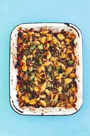

Bacon Conchigle Pasta Bake

This is one of my favourite weeknight recipes.
I like to make this mac & cheese-style dish in a large, shallow roasting tin, so you get the maximum
surface area for the crunchy topping. There's broccoli and spinach for added greens and a wonderful
savoury note from the bacon. Feel free to use any cheese you have left over in the fridge; blue cheese
or cheddar would work well.
Serves: 2 adults + 2 children.
Preparation time: 10 minutes.
Cooking time: 25-30 minutes
Ingredients
- 300g conchiglie or other pasta shape
- 1 large head of broccoli, chopped into small bits
- 160g bacon lardons
- A few sprigs of fresh thyme
- 3 tablespoons olive oil
- 400g crème fraîche
- 100g spinach, roughly chopped
- 1/2 lemon, juice only
- 1 teaspoon of sea salt (optional)
- 30g parmesan (or other) cheese, grated
- 40g panko or fresh white breadcrumbs
Method
- Preheat the oven to 220 degrees/200 degrees fan/gas 7. Cook the pasta in boiling salted water for 10 minutes,
then drain. While it is cooking, add the broccoli, lardons and thyme to a large roasting tin, mix in 1 tablespoon
of olive oil and roast them in the oven for 10 minutes.
- Mix the drained pasta with another tablespoon of oil, crème fraîche, spinach, lemon juce and (optional) sea salt,
then add the mix to the roasting tin.
- Scatter the tin with the cheese and breadcrumbs, then drizzle with the last tablespoon of oil. Bake in the oven for
another 15-20 minutes, until the top is golden brown and crunchy.